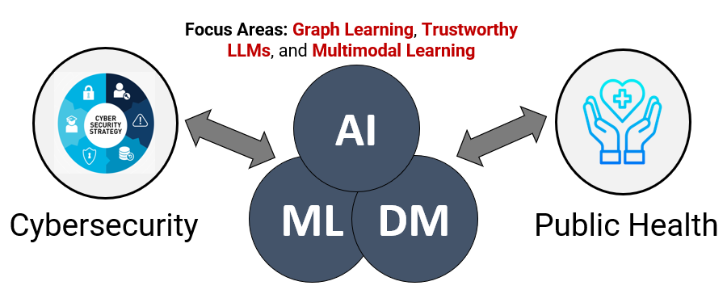

Research Overview
Research Areas: AI/ML, Data Mining, Cybersecurity, and Public Health.| I and my research group are very passionate about developing novel yet elegant techniques to solve real-world problems that generate broader impacts. By harnessing large-scale, multi-source, multi-modality data, we discover new research problems, propose novel machine learning models, and develop advanced AI techniques for real-world driven applications in cybersecurity and public health. More specifically, we strive to (1) advance knowledge and science in graph learning, trustworthy LLMs, and multimodal learning, (2) bridge AI/ML and cybersecurity concentrating on AI security and safety, large-scale malware detection, and the study of the evolving underground ecosystem, and (3) develop AI and data-driven techniques for public health focusing on combating the opioid crisis and infectious disease outbreaks. |  |
Integrating humanity and technology, our long-term goal of research is to advance capabilities and trustworthiness of AI to provide state-of-the-art innovations i) to secure cyberspace for its users, and ii) to improve health and well-being of people around the world.
Research Sponsors: National Science Foundation (NSF), Department of Justice (DoJ)/National Institute of Justice (NIJ).
| "Innovation, research and education - for a better world!" We deeply appreciate the National Science Foundation (NSF) programs of Information and Intelligent Systems (IIS): Information Integration and Informatics (III), Secure and Trustworthy Cyberspace (SaTC), Office of Advanced Cyberinfrastructure (OAC), Disrupting Operations of Illicit Supply Networks (D-ISN), and Smart and Connected Communities (S&CC), and the Department of Justice (DoJ)/National Institute of Justice(NIJ) for the strong support on our research works. THANK YOU! |
 |
Current Research and Impacts
- Developing New Machine Learning Paradigm Towards Effective yet Efficient Foundation Graph Learning Models
- Developing Novel Techniques Towards Trustworthy LLMs and Cost-effective Multimodal Learning Models
- Bridging AI and Cybersecurity for Malware Detection, AI Security/Safety, and Study of the Evolving Underground Ecosystem
- Advancing AI and Data-driven Techniques to Combat the Opioid Crisis and Infectious Disease Outbreaks
Ongoing Research: As graph data has been ubiquitous in various real-world applications, graph learning has drawn significant attention in recent years. Along this line of research, we discover new research problems, formulate them with rigor and elegance, and advance knowledge and science in graph learning by the development of novel techniques to address the grand challenges of heterogeneity, label-scarcity, noise, incompleteness, and sparseness for effective and robust graph representation learning. Scientific Impact: With significant support from the NSF III program, our research on fundamental graph learning has resulted in over 50 publications on the flagship venues in AI/ML and data science such as TMLR, IEEE TBD, IEEE TKDE, ICLR, ICML, NeurIPS, NAACL, UAI, AAAI, WWW, WSDM, KDD, CIKM, ICDM, etc. Notably, we have received the prestigious ACM CIKM 2021 Best Paper Award in Full Paper Track, the ACM CIKM 2021 Best Paper Runner-Up Award in Applied Paper Track, and the SIGKDD 2017 Best Paper Award and SIGKDD 2017 Best Student Paper Award in Applied Data Science Track. Promising Direction: Inspired by the success of foundation language models in applications such as ChatGPT, one can envision the far-reaching impacts that can be brought by a pre-trained Foundation Graph Learning Model (FGLM) with broader applications in the areas such as scientific research, social network analysis, anomaly detection, drug discovery, and e-commerce. Despite the significant progress of pre-trained graph neural networks, there has not yet a FGLM that can achieve desired performance on various graph-learning-related tasks. To bridge this gap, by continuing our effort and with the support of our project recently funded by the NSF, we will design and develop a new machine-learning paradigm (techniques, methods, and models) aiming to jointly solve the cross-task, cross-graph, and cross-domain challenges in graph learning towards effective yet efficient FGLMs, which will help researchers and practitioners in different domains to advance their work in a variety of real-world applications driven by the ubiquitous graph data. Here are some example works from our research in this field.
"Neural Graph Pattern Machine" (ICML, 2025). [Paper]
"Towards Learning Generalities Across Graphs via Task-trees" (ICML, 2025). [Paper]
"Training MLPs on Graphs without Supervision" (WSDM, 2025). [Paper]
"GFT: Graph Foundation Model with Transferable Tree Vocabulary" (NeurIPS, 2024). [Paper]
"How Does Message Passing Improve Collaborative Filtering?" (NeurIPS, 2024). [Paper]
"Subgraph Pooling: Tackling Negative Transfer on Graphs" (IJCAI, 2024). [Paper]
"How to Improve Representation Alignment and Uniformity in Graph-based Collaborative Filtering?" (ICWSM, 2024). [Paper]
"From Coarse to Fine: Enable Comprehensive Graph Self-supervised Learning with Multi-granular Semantic Ensemble" (ICML, 2024). [Paper]
"GCVR: Reconstruction from Cross-View Enable Sufficient and Robust Graph Contrastive Learning" (UAI, 2024). [Paper]
"Multi-task Self-supervised Graph Neural Networks Enable Stronger Task Generalization" (ICLR, 2023). [Paper]
"GraphPatcher: Mitigating Degree Bias for Graph Neural Networks via Test-time Node Patching" (NeurIPS, 2023). [Paper]
"Self-Supervised Graph Structure Refinement for Graph Neural Networks" (WSDM, 2023). [Paper]
"Heterogeneous Temporal Graph Neural Network" (SIAM SDM, 2022). [Paper]
"A Survey on Heterogeneous Graph Embedding: Methods, Techniques, Applications and Sources" (IEEE TBD, 2022). [Paper]
"Heterogeneous Graph Structure Learning for Graph Neural Networks" (AAAI, 2021). [Paper]
"Heterogeneous Graph Attention Network" (WWW, 2019). 3K+ citations [Paper]
"HinDroid: An Intelligent Android Malware Detection System Based on Structured Heterogeneous Information Network" (SIGKDD, 2017). SIGKDD 2017 Best Paper Award and Best Student Paper Award (ADS track) [Paper]
Nowadays, cutting-edge technologies in AI keep reshaping our view of the world. For example, the recently launched foundation language models have shown their capability of generating human-like conversation on extensive topics. Due to the impressive performance on a variety of language-related tasks (e.g., open-domain question answering, translation, and document summarization), LLMs could have a wide range of potential applications (e.g., customer service, personal assistants, and medical diagnosis). To be trustworthy, LLMs must appropriately reflect characteristics such as accuracy, explainability and interpretability, privacy, reliability, robustness, safety, and security or resilience to attacks, and other properties yet to be identified. We aim to explore the open challenges towards trustworthy LLMs. Besides the foundation models in natural language procession (NLP), the pre-trained foundation models in computer vision (CV) can achieve state-of-the-art performance on various vision-tasks (e.g., object detection, image segmentation, and video reasoning), which make them particularly useful for applications such as facial recognition, medical image analysis, and self-driving cars. Built upon our extensive research on AI/ML, we aim to develop cost-effective multimodal learning models for multi-modality data, including text, images, videos, and graphs. Here are some of our initial efforts on these research topics.
"EfficientLLM: Efficiency in Large Language Models" (Hugging Face Daily Papers, 2025). [Paper] [Website]
"Can LLMs Convert Graphs to Text-Attributed Graphs?" (NAACL, 2025). [Paper]
"MOPI-HFRS: A Multi-objective Personalized Health-aware Food Recommendation System with LLM-enhanced Interpretation" (SIGKDD, 2025). [Paper]
"Towards a Design Guideline for RPA Evaluation: A Survey of Large Language Model-Based Role-Playing Agents" (Preprint, 2025). [Paper]
"The Obvious Invisible Threat: LLM-Powered GUI Agents' Vulnerability to Fine-Print Injections" (Preprint, 2025). [Paper]
"Toward a Human-Centered Evaluation Framework for Trustworthy LLM-Powered GUI Agents" (Preprint, 2025). [Paper]
"CLEAR: Towards Contextual LLM-Empowered Privacy Policy Analysis and Risk Generation for Large Language Model Applications" (ACM IUI, 2025). [Paper]
"AutoFEA: Enhancing AI Copilot by Integrating Finite Element Analysis Using Large Language Models with Graph Neural Networks" (AAAI, 2025). [Paper]
"Position: TrustLLM: Trustworthiness in Large Language Models" (ICML, 2024). [Paper]
"TinyGPT-V: Efficient Multimodal Large Language Model via Small Backbones" (Hugging Face Daily Papers, 2024). [Paper]
"Mora: Enabling Generalist Video Generation via a Multi-Agent Framework" (Hugging Face Daily Papers, 2024). [Paper]
"ViT-1.58b: Mobile Vision Transformers in the 1-bit Era" (Preprint, 2024). [Paper]
"TTT-UNet: Enhancing U-Net with Test-Time Training Layers for Biomedical Image Segmentation" (Preprint, 2024). [Paper]
"ArtGPT-4: Towards Artistic-understanding Large Vision-Language Models with Enhanced Adapter" (Hugging Face Daily Papers, 2023). [Paper]
"Grape: Knowledge Graph Enhanced Passage Reader for Open-domain Question Answering" (EMNLP, 2022). [Paper]
Ongoing Research: Nowadays, society's overwhelming reliance on complex cyberspace makes its security more important than ever. By seamlessly integrating my expertise on the interdisciplinary areas in both AI and cybersecurity, our work mainly focuses on answering the following research questions: (1) How can we advance AI-driven innovations to protect users against evolving malware attacks? Malware (i.e., malicious software) has been used as a major weapon by cyberthreat actors to launch various attacks, such as the Colonial Pipeline shutdown forced by the ransomware attack in May 2021. By the long-term collaboration with industry partners, we are addressing several key challenges in malware analysis and detection by the development of: i) advanced static/dynamic analysis techniques for effective feature representations of binary executables in both PC and mobile platforms; ii) innovative models to abstract the complex ecosystem of application (app) development; and iii) novel yet effective AI-driven techniques for large-scale malware detection. (2) How can we improve resilience of machine learning models against adversarial attacks? As machine learning (ML) models have been deployed in various applications, the incentive for defeating them increases. In light of this, ranging from shallow learning to deep learning (including deep neural networks and graph neural networks), we conduct original research works by developing novel attack perception models based on diverse mixture of experts and adaptive defenses using randomization techniques and regularization algorithms designed based on min-max optimization strategy to improve resilience of ML models against both poisoning and evasion attacks. (3) How can we have a deep understanding of the evolving underground ecosystem for effective intervention against cybercrimes? Driven by considerable profits, cybercriminals have used various techniques to exploit weak links of cyberspace, who are organized within the online underground ecosystem - i.e., a loose federation of specialists selling capabilities, services, and resources explicitly tailored to Internet abuses. Within the ecosystem, underground markets emerging in the forms of underground forums and dark webs have played a central role for them to exchange knowledge and trade in illicit products or services. Supported by my NSF Career Award, we are developing an AI-driven framework for in-depth investigation of the online underground ecosystem to help secure cyberspace by producing effective interventions against cybercrimes. Research and Industrial Impacts: Supported by the NSF SaTC and OAC programs, our research has resulted in a series of publications on top-tier venues in AI/ML and cybersecurity such as ACM CSUR, IEEE TNSE, NDSS, USENIX Security, ACSAC, ICSE, ICLR, AAAI, IJCAI, SIGKDD, CIKM, ICDM, etc. In particular, our developed techniques and systems have been incorporated into popular commercial cybersecurity products such as Comodo Internet Security that protect millions of users worldwide against evolving malware attacks. Promising Direction: Besides its bright side, AI can also be abused to do harm (e.g., casualties caused by misleading traffic signals, suicides encouraged by AI generated conversations). How can we enable trustworthy AI in response to the safety issues? Built upon our extensive research on the interdisciplinary areas of AI/ML and cybersecurity, we will explore the new yet challenging direction of AI safety aiming at preventing AI from doing harm. Here are some of our example works on these ongoing research topics.
"Careful About What App Promotion Ads Recommend! Predict and Explain Malware Promotion through App Promotion Graph" (NDSS, 2025). [Paper]
"Symbolic Prompt Tuning Completes the App Promotion Graph" (ECML-PKDD, 2024). [Paper]
"Graph Mining for Cybersecurity: A Survey" (ACM TKDD, 2023). [Paper]
"Back-Propagating System Dependency Impact for Attack Investigation" (USENIX Security, 2022). [Paper]
"DescribeCtx: Context-Aware Description Synthesis for Sensitive Behaviors in Mobile Apps" (ICSE, 2022). [Paper]
"Arms Race in Adversarial Malware Detection: A Survey" (ACM CSUR, 2021). [Paper]
"Heterogeneous Temporal Graph Transformer: An Intelligent System for Evolving Android Malware Detection" (SIGKDD, 2021). [Paper]
"Metagraph Aggregated Heterogeneous Graph Neural Network for Illicit Traded Product Identification in Underground Market" (ICDM, 2020). [Paper]
"Key Player Identification in Underground Forums over Attributed Heterogeneous Information Network Embedding Framework" (CIKM, 2019). [Paper]
"Enhancing Robustness of Android Malware Detection System against Adversarial Attacks on Heterogeneous Graph based Model" (CIKM, 2019). [Paper]
"Out-of-sample Node Representation Learning for Heterogeneous Graph in Real-time Android Malware Detection" (IJCAI, 2019). [Paper]
"iDev: Enhancing Social Coding Security by Cross-platform User Identification Between GitHub and Stack Overflow" (IJCAI, 2019). [Paper]
"Enhancing Robustness of Deep Neural Networks Against Adversarial Malware Samples: Principles, Framework, and Application to AICS'2019 Challenge" (AICS, 2019). AICS 2019 Challenge Problem Winner [Paper]
"ICSD: An Automatic System for Insecure Code Snippet Detection in Stack Overflow over Heterogeneous Information Network" (ACSAC, 2018). [Paper]
"Gotcha - Sly Malware! Scorpion: A Metagraph2vec Based Malware Detection System" (SIGKDD, 2018). [Paper]
"Adversarial Machine Learning in Malware Detection: Arms Race between Evasion Attack and Defense" (IEEE EISIC, 2017). EISIC 2017 Best Paper Award [Paper]
"A Survey on Malware Detection Using Data Mining Techniques" (ACM CSUR, 2017). [Paper]
Ongoing Research: By harnessing big data revolutions and developing novel AI techniques, we aim to improve public health with the focus on the following two topics. (1) Developing a holistic framework to combat the opioid crisis. Battling the devastating and lethal opioid epidemic is a national priority. By collaboration with various partners including healthcare professionals and law enforcement, we strive to advance data science and AI to fight the opioid crisis through two-fold research objectives: i) (from user perspective): we are developing novel data-driven models for opioid overprescribing prediction and drug-drug interaction discovery to reduce opioid overdose risks; ii) (from supplier perspective): we are advancing AI technologies to combat online opioid trafficking. (2) Developing robust science-based decision support systems in responses to infectious disease outbreaks like the pandemic. With the large-scale, disease-related data, we are developing a new interactive decision support framework allowing in silico exploration of extensive possible non-pharmaceutical interventions prior to the potential field implementation phase responding to future natural or health-related disasters. Research and Societal Impacts: With significant support from the NSF III and D-ISN programs as well as the DoJ/NIJ grant, the series of our original works have advanced the knowledge and science in the interdisciplinary fields of AI/data science and public health by addressing the critical issues facing our society. Our research has resulted in a series of publications on top-rank venues in AI/ML, data science, and cybersecurity such as Decision Support Systems, ACM TIST, IEEE J-BHI, ICDM, NeurIPS, SIGKDD, CIKM, WWW, ACSAC. Besides the scholarly impact, we have engaged with local communities and various partners to broaden societal impacts, e.g., via ND WWYFF opportunity, we have engaged with the Drug Enforcement Administration (DEA) and worked with NBC for a filming on the combat against the opioid crisis that was disseminated to the public with millions of audiences in the Drug Awareness Month in Oct 2023 and re-aired in September 2024, which helped facilitate getting the message out about this very important public health issue. To combat the pandemic, in early March 2020, we developed an AI and data-driven system (named a-Satellite) to provide near real-time COVID-19 risk assessment in the US for community mitigation. After the system was launched for public tests, it has attracted positive media attention by news media outlets like WKYC, Ideastream, Fox8, WTAM, and received the MetroLab Innovation of the Month (May 2020). As of June 19, 2023, the system has had 654,522 users with positive feedback on its utility of dynamic risk estimations, which demonstrates its significant societal impact when facing health-related disasters like the pandemic. Promising Direction: It has been argued that combating opioid epidemic takes long-term commitment and effort. In addition to the medication assisted treatment (MAT), with accessibility of big data and advances of AI technologies, supported by our funded NSF grant, we aim to facilitate personalized dietary nutrition in the prevention and intervention against opioid misuse and addiction. In addition, compared to other age groups, Teenagers and Young Adults (TYAs) are disproportionately affected by and particularly vulnerable to opioid misuse and addiction. However, research to promote personalized health, safety and intervention recommendations to the nearly thirty percent of at-risk TYAs has been lacking. To bridge this gap, with the support from our project recently funded by the NSF, we aim to develop a new AI-driven paradigm to promote community resilience for TYAs in preventing opioid misuse and addiction. We believe for our generation, for the next generation, and the future of this country, the line of this research work is vital and will save lives. Here are some of our example works on these ongoing research topics.
"LLM-Empowered Class Imbalanced Graph Prompt Learning for Online Drug Trafficking Detection" (ACL, 2025). [Paper]
"NGQA: A Nutritional Graph Question Answering Benchmark for Personalized Health-aware Nutritional Reasoning" (ACL, 2025). [Paper]
"Diet-ODIN: A Novel Framework for Opioid Misuse Detection with Interpretable Dietary Patterns" (SIGKDD, 2024). [Paper]
"Knowledge-prompted ChatGPT: Enhancing Drug Trafficking Detection on Social Media" (Information & Management, 2024). [Paper]
"Hypergraph Contrastive Learning for Drug Trafficking Community Detection" (ICDM, 2023). [Paper]
"Disentangled Heterogeneous Dynamic Graph Learning for Opioid Overdose Prediction (SIGKDD, 2022). SIGKDD 2022 Best Paper Award Shortlist [Paper]
"RxNet: Rx-refill Networks for Overprescribing Prediction (CIKM, 2021). CIKM 2021 Best Paper Award (1st out of 1251, Full Paper Track) [Paper]
"Detection of Illicit Drug Trafficking Events on Instagram: A Deep Multimodal Multi-label Learning Approach (CIKM, 2021). CIKM 2021 Best Paper Runner-Up (2nd out of 290, Applied Track) [Paper]
"Distilling Meta Knowledge on Heterogeneous Graph for Illicit Drug Trafficker Detection on Social Media" (NeurIPS, 2021). [Paper]
"Dr.Emotion: Disentangled Representation Learning for Emotion Analysis on Social Media to Improve Community Resilience in the COVID-19 Era and Beyond (WWW, 2021). WWW 2021 Best Paper Award Shortlist [Paper]
"alpha-Satellite: An AI-driven System and Benchmark Datasets for Dynamic COVID-19 Risk Assessment in the United States" (J-BHI, 2020). Note: The developed system has had 654,522 users as of June 19, 2023 with positive feedback of its utility of dynamic risk assessment and attracted positive media attentions (e.g., WKYC, Ideastream, NPR, Fox8, WTAM, GovTech). MetroLab Innovation of the Month [Paper]
"dStyle-GAN: Generative Adversarial Network based on Writing and Photography Styles for Drug Identification in Darknet Markets" (ACSAC, 2020). [Paper]
"Your Style Your Identity: Leveraging Writing and Photography Styles for Drug Trafficker Identification in Darknet Markets over Attributed Heterogeneous Information Network" (WWW, 2019). [Paper]
"Detecting Opioid Users from Twitter and Understanding their Perceptions toward MAT" (ICDMW, 2017). [Paper]
Media Press
| Press Coverage: Our works on fondamental research in AI/ML and bridging AI and data science with cybersecurity and public health have generated significant industrial and societal impacts, which have attracted positive media attentions by various news media outlets. For examples, |
 |
-
Fighting to Combat the Opioid Crisis with Artificial Intelligence (AI)
Award-winning "What Would You Fight For?" series: Fighting to Combat the Opioid Crisis (10/28/2023 & 09/28/2024)
Our work on the combat against the opioid crisis by advancing AI technologies received the award-winning "What Would You Fight For (WWYFF)?" series, which was promoted by the Drug Enforcement Administration (DEA) and aired on NBC and the stadium during the Notre Dame football game with millions of audiences on October 28, 2023 in the "Red Robbin Week". Due to the significant societal impact, it was re-aired on NBC-Peacock and the stadium during the Notre Dame football game on September 28, 2024. The story can be accessed here and the filmed video aired on NBC during the football game can be found here. 
The University of Notre Dame's award-winning "What Would You Fight For (WWYFF)?" series showcases the work, scholarly achievements, and global impact of Notre Dame faculty, students, and alumni. These two-minute segments, each originally aired during a home football game broadcast on NBC, highlight the University's proud moniker, the Fighting Irish, and tell the stories of the members of the Notre Dame family who fight to bring solutions to a world in need. 
"I wanted to give my heartfelt thanks to Prof. Fanny Ye. I lost my 19-year-old son on April 22nd, 2019. ... Our family has only three boys and my son was the only child with our family name. ... One of our last conversations was how devastated she was to lose her grandson that carried our family name. It was a burden that I carried in silence. Needless to say the loss of my precious son has devastated my life and the lives of my siblings. ... Prof. Fanny Ye, I think what you are doing is phenomenal. I am often invited to various events to commemorate victims of fentanyl poisoning. I think these events are important. However, solutions are the best way we can honor our children. The AI program is amazing. I know that my son and his friends often bought drugs from the black web. ... To the students and staff who are working on this program know that with my tears and prayers I say thank you."After the filmed video was aired, we have been receiving emails from the audiences who generously shared their stories and appreciated our research on the fight against the opioid crisis by advancing AI technologies. For example,
- Notre Dame computer scientists receive NSF award to reduce opioid misuse through improved nutrition (11/03/2023)
- Combating online opioid trafficking with advanced AI techniques (09/16/2022)
- Data and Artificial Intelligence Technologies Take On Infectious Disease Outbreaks (2021)
- Real-Time Risk Assessment Tool Could Aid Reopening Measures (MetroLab Innovation of the Month, May 2020)
- Researchers at Case Western Reserve University testing map that assess COVID-19 risk in real time (2020)
- CWRU Researchers Create Real-Time Tool To Map COVID-19 Risk (2020)
- CWRU researchers create map used to evaluate risk of COVID-19 transmission (2020)
- CWRU has a coronavirus hot spot map and mobile app (2020)
- Case Western Reserve University professors testing publicly available program that gives real-time, location-based risk assessment for transmission of novel coronavirus (2020)
- WVU researcher awarded NSF CAREER to develop new techniques to secure cyberspace (2019)
- WVU researcher named Challenge Problem Winner in AI for Cyber Security workshop (2018)
- WVU researcher awarded grant to develop techniques to enhance machine learning security (2018)
- WVU researchers awarded grant to develop techniques to enhance cyberinfrastructure security (2018)
- WVU researcher awarded grant to develop new techniques to prevent against cyber attacks (2016)